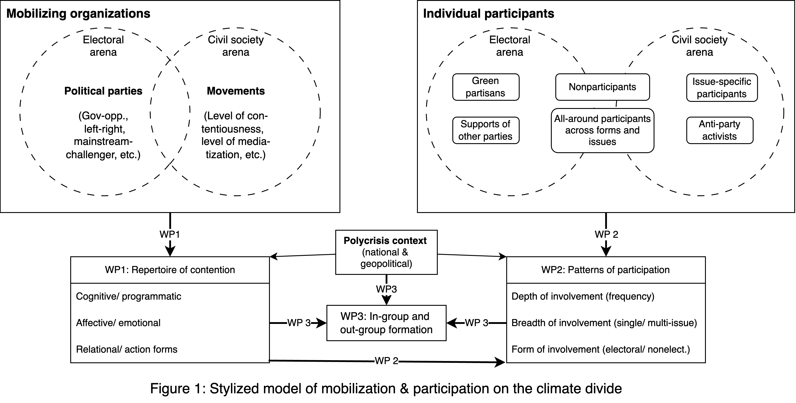
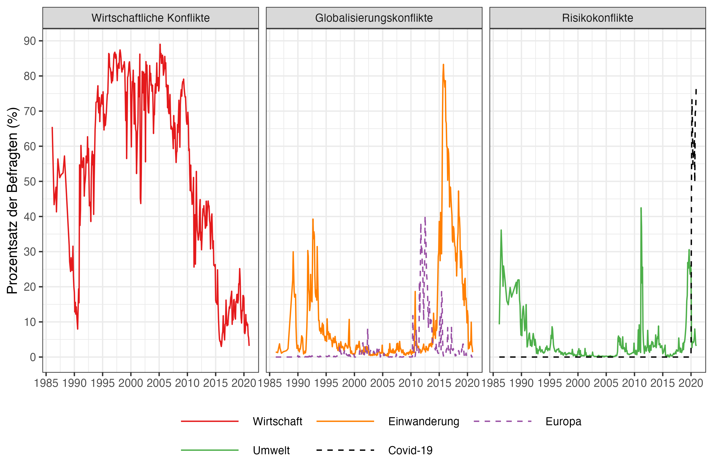
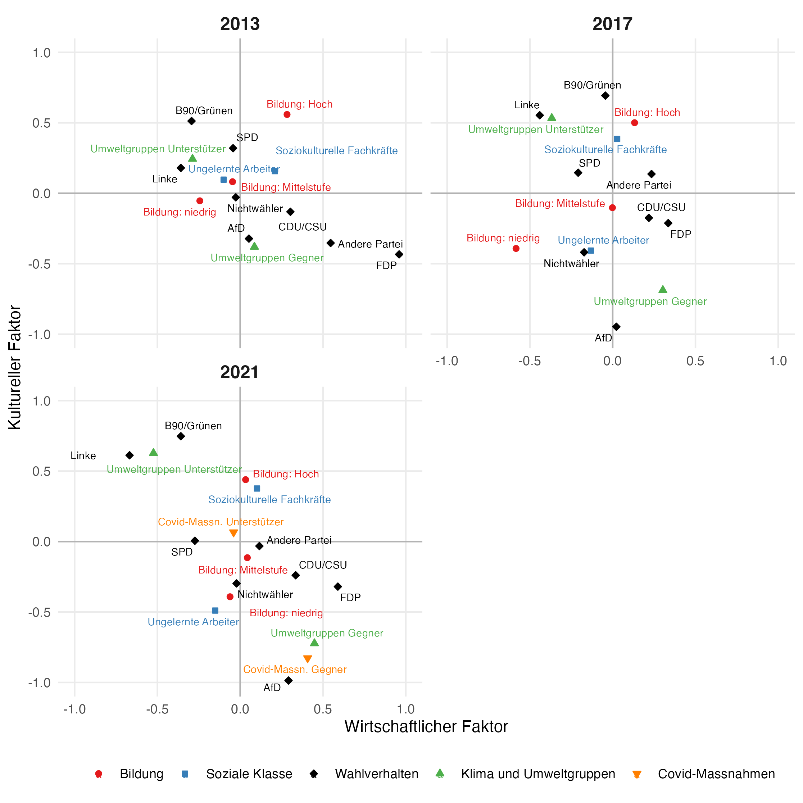
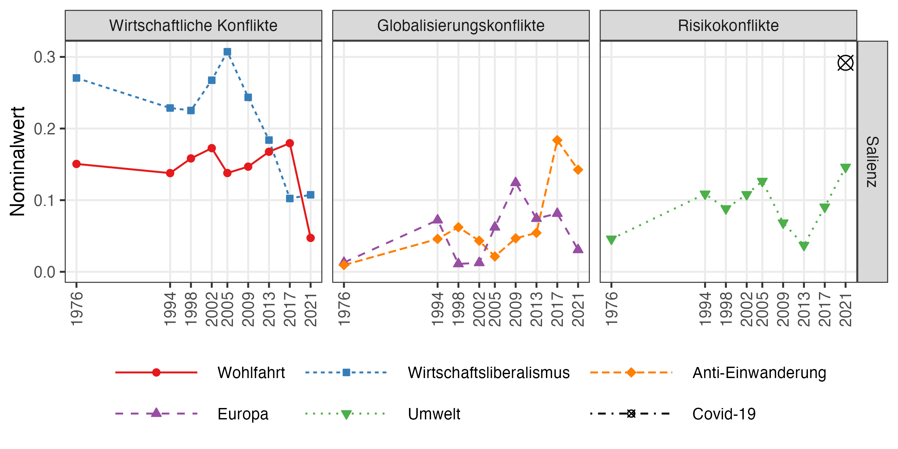
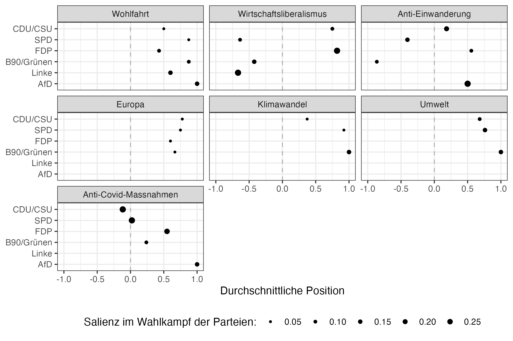
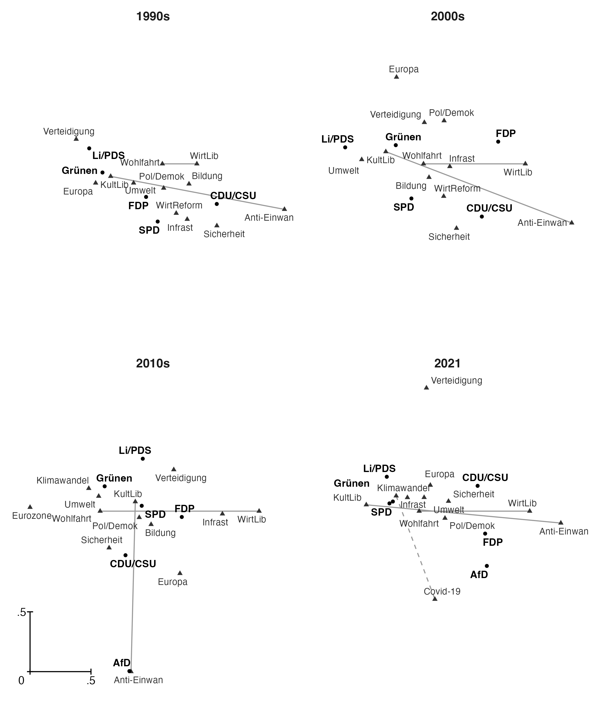
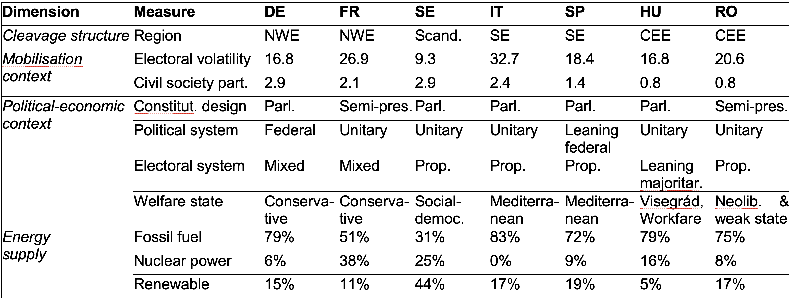
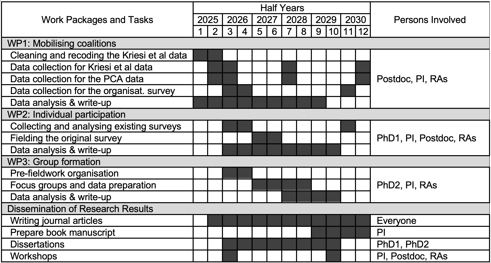
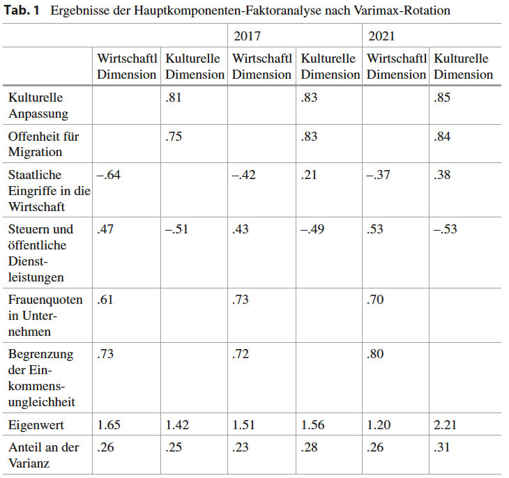
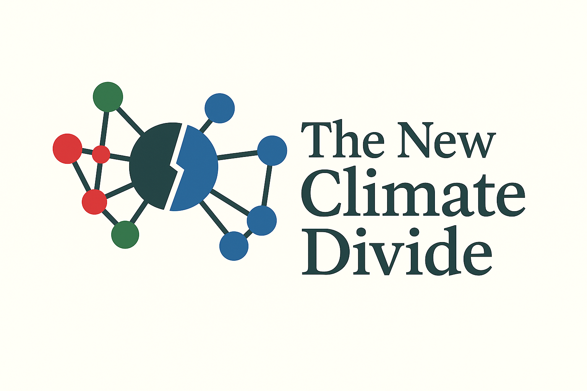

The New Climate Divide
![]()
2025-05-22
Endre Borbáth
- Junior Professor of Empirical-Analytical Participation Research in Heidelberg
- PhD from the European University Institute (Dec. 2018)
- Interested in mass mobilization amidst transformations in European cleavages
- bridging supply- (parties & social movements) and demand-side (micro-level) perspectives
- Mainly working with quantitative methods
- Leader of the Emmy-Noether research group “The New Climate Divide”
- to be started on 01.06.2025
- I love running marathons ❤️
Schedule of my talk today
- Overview of the project
- Central concepts & research questions
- Empirical program
- Work packages
- Illustrative empirical results from Germany
Central concepts & research questions
Climate change as a cleavage issue
A new divide on climate change is emerging in the electoral and civil society arenas.
- Polarisation between:
- an emerging right-wing front
- an increasingly mainstream, but fragmented ‘green field’
- Climate change is transformed into a positional, cleavage-forming issue.
Climate change as an economic issue
The politicisation of climate change has the potential to revive the state-market cleavage.
- High costs for the needed transformation, supported by the state
- unlike earlier environmental conflicts
- mainly involved regulatory solutions related to conservation
- unlike earlier environmental conflicts
- Costs are increasingly salient under the pressure of a geopolitically charged, polycrisis context
Research questions
- What coalitions of actors mobilise on the climate divide, and what type of repertoire of contention do they adopt?
- To what extent (depth), on what issues (breadth), and in what form (electoral/nonelectoral) do individuals participate on the climate divide, and how is their participation affected by the repertoire of contention of mobilising actors?
- How are in-group and out-group identities shaped by mobilisation and participation on the emerging climate divide in the polycrisis context?
Expected contribution
- The main objective is to identify the potential for reform amidst emerging polarisation on climate change.
- Including: exploring the conditions under which climate-related polarisation might be overcome.
- More specifically, contributions to three strands of the literature:
- mobilisation
- participation
- the consequences of crises
Winners and losers of climate-change-related transformations
- The emerging constellation distinguishes between relative winners and losers, based on the extent to which they face direct and indirect costs
- Direct costs related to the consequences of natural catastrophes facilitated by climate change;
- Indirect costs reflect the burden of reducing greenhouse gas (GHG) emissions
- The winners and losers potentially differ from the winners and losers of previous transformations
The space of climate mobilisation
- Winners and losers are mobilized in a three-dimensional space:
- Problem definition (acknowledgement vs skepticism)
e.g., climate skeptic right-wing populist parties
- Scope of the problem (specific vs generic)
e.g., CO2 pricing vs. climate justice
- Pace of the intervention (gradual vs fast)
e.g., consultative permitting vs. emergency politics
- These dimensions also divide the ‘green field’
Empirical program
Empirical program
- Map and explain the emerging climate cleavage in the electoral and civil society arenas using a mixed-methods design
- computational social science, survey-experimental methods, and focus groups
- Seven EU countries:
- from Northwestern Europe: France, Germany;
- Northern Europe: Sweden;
- Southern Europe: Italy, Spain;
- Central and Eastern Europe: Hungary, Romania.
- Period: from 2010 until the Swedish elections in 2030.
Work packages
One WP is dedicated to each of the research questions:
Mobilizing actors
Participation
Identities
Work packages
One WP is dedicated to each of the research questions:
Relationship between the WPs
WP1: Mobilising coalitions
- RQ: What coalitions of actors mobilise on the climate divide, and what type of repertoire of contention do they adopt?
- Contributions:
- Map mobilisation across countries and over time (2010–2030)
- Identify actor coalitions and their programmatic, emotional, and action repertoires
- Position coalitions in the economic–cultural space and the climate mobilisation space (definition – scope – pace)
- Data:
- Updated Kriesi et al. dataset (media coverage of election campaigns)
- Political Claims Analysis (media, press releases, social media)
- Organisational survey (incl. interest groups and litigation actors)
- Methods: Content analysis, multimodal network analysis, ERGMs
WP2: Individual participation
- RQ: To what extent (depth), on what issues (breadth), and in what form (electoral/nonelectoral) do individuals participate on the climate divide, and how is their participation shaped by actor mobilisation?
- Contributions:
- Map the level, breadth, and form of participation over time and across countries
- Identify sociological and normative foundations of the climate cleavage
- Link individual participation to meso-level mobilisation patterns
- Data:
- Existing surveys: ISSP, GESIS, CRONOS, EVS
- Original panel survey with conjoint experiments
- Methods: Issue-based participation models, survey experiments, panel analysis
WP3: Group identities in the polycrisis
- RQ: How are in-group and out-group identities shaped by mobilisation and participation on the climate divide in the polycrisis context?
- Contributions:
- Examine identity formation as an outcome of supply–demand interaction
- Investigate how the polycrisis context enhances group differentiation
- Qualitatively assess critical episodes in mobilisation
- Data:
- Focus groups with organisational actors and participants
- Two per country, conducted separately with actors and participants
- Methods: Focus group research
- Countries: Germany, Sweden, Italy, Hungary
Illustrative results from Germany
Based on: Borbáth, Endre, and Swen Hutter. “Risikokonflikte Und Die Restrukturierung Des Parteienwettbewerbs.” In Wahlen Und Wähler - Analysen Aus Anlass Der Bundestagswahl 2021, edited by Harald Schoen and Bernhard Wessels, 505–24. Wiesbaden: Springer VS, 2024. https://doi.org/10.1007/978-3-658-42694-1_20.
The German case
- The German case is particularly interesting for two reasons:
- The Greens are the most successful green party in Europe
- One of the few countries to experience a salient climate-related conflict
- At the same time, the Greens are losing ground in the 2021 Bundestag elections
- The AfD is gaining ground as a climate-sceptic party
Perception of the most important problem (1986-2022)

Anteil derjenigen, die die spezifischen Themen als wichtigstes Problem nennen, gewichtet nach soziodemografischen Merkmalen. Die Kategorien schließen sich gegenseitig aus. „Arbeitslosigkeit“, „Renten und Alte“, „Wirtschaftslage“, „Inflation, Preise, Zinsen“, „Steuern, Steuerreform“, „Löhne und Einkommen“, „Sozialpolitik“, „internationale Bankenkrise“, „Staatsverschuldung“, „Mieten, Wohnungsmarkt“, „Finanzierung Deutsche Einheit“, „Hartz IV, Montagsdemos“, „Wirtschaftsgefälle“, „Energiesteuern“, „Lohnfortzahlung“, „Streikrecht, Tarife“, „Steuerhinterziehung/ Steuerflucht“, „Kapitalismuskritik/ Unternehmensschelte“ in wirtschaftliche Konflikte einbezogen. „EG, Europa, Binnermarkt“, „Euro, “Teuro“, „Türkei-Beitritt zur EU“ in Europa enthalten. „Ausländer”, „Asylanten, Asyl“, „Pegida/ Anti-Islam“, „Islam, Islamismus“ in Einwanderung enthalten. „Umweltschutz“, „Kernkraftwerke“, „Energiewende/ erneuerbare Energie“ in Umwelt enthalten. „Corona-Virus“ enthalten in Covid-19. Quelle: Politbarometer-Umfragen (Forschungsgruppe Wahlen 2022)
Demand-side positions in a two-dimensional space

Positionen berechnet im zweidimensionalen Raum, der durch die wirtschaftlichen und kulturellen Faktoren definiert ist. Die Präferenzen in Bezug auf den Klimawandel und Covid-19 werden anhand der Einstellung zu Gruppen gemessen, die sich für das jeweilige Thema einsetzen. In Bezug auf den Klimawandel bezog sich das Umfrage-Item in den Jahren 2013 und 2017 auf “Umweltschutzgruppen”, im Jahr 2021 auf “Gruppen gegen den Klimawandel, wie z. B. Fridays for Future”. Die Befürworter:innen sind die Befragten, die auf der Skala die positivste Bewertung abgegeben haben, die Gegner:innen sind die Gruppen mit der negativsten Bewertung. Quelle: Querschnittserhebungen nach den Wahlen (GLES 2022).
Salience of issues in party competition (1976-2021)

Bedeutsamkeit gemessen als Anteil der Kernsätze zum jeweiligen Thema in jeder Wahlkampagne. Codiert wurde die Berichterstattung der Süddeutschen Zeitung und der BILD-Zeitung in den zwei Monaten vor dem Wahltag mittels einer relationalen Inhaltsanalyse. Quelle und weitere Informationen: PolDem-Datensatz (Kriesi et al. 2020)
Issue-specific party positions in 2021

Parteipositionen gemessen als durchschnittliche Parteiposition zu jedem Thema, auf einer Skala von -1 (Ablehnung) bis 1 (Unterstützung), wobei 0 die Beibehaltung des Status quo bedeutet. Parteispezifische Bedeutung, gemessen als der Anteil der Kernsätze, die dem spezifischen Thema in der Parteikampagne gewidmet sind. Es werden nur Partei-Issue-Kombinationen mit mindestens 4 Beobachtungen berücksichtigt. Quelle: PolDem-Datensatz (Kriesi et al. 2020)
Party positions in a two-dimensional space (1994-2021)

Thank you for your attention!
📧 endre.borbath@ipw.uni-heidelberg.de
🌐 www.endre-borbath.eu
Appendix slides
Country selection
Work programme
Factor results

Faktorladungen, die kleiner als | .2 | sind, werden nicht angezeigt. Die enthaltenen Items sind: „Einwanderinnen und Einwanderer sollten verpflichtet werden, sich der deutschen Kultur anzupassen“, „Für die Besetzung der Aufsichtsräte großer Unternehmen sollte es eine gesetzlich verankerte Frauenquote geben“, „Der Staat sollte sich aus der Wirtschaft heraushalten“, „Die Regierung sollte Maßnahmen ergreifen, um die Einkommensunterschiede zu verringern“, „Wie ist Ihre Meinung zum Thema Steuern und sozialstaatliche Leistungen?“ („weniger Steuern und weniger sozialstaatliche Leistungen“ bis „mehr sozialstaatliche Leistungen und mehr Steuern“), „Wie ist Ihre Meinung zum Thema Zuzugsmöglichkeiten für Ausländer?“ („Zuzug von Ausländern erleichtern“ bis „Zuzug von Ausländern einschränken“). Quelle: Nachwahl-Querschnittserhebungen (GLES 2022)
